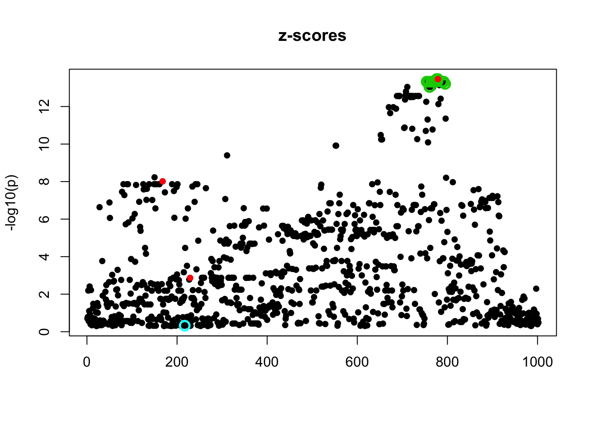
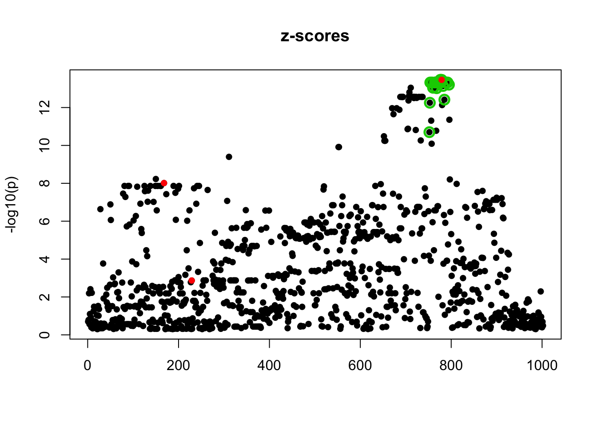
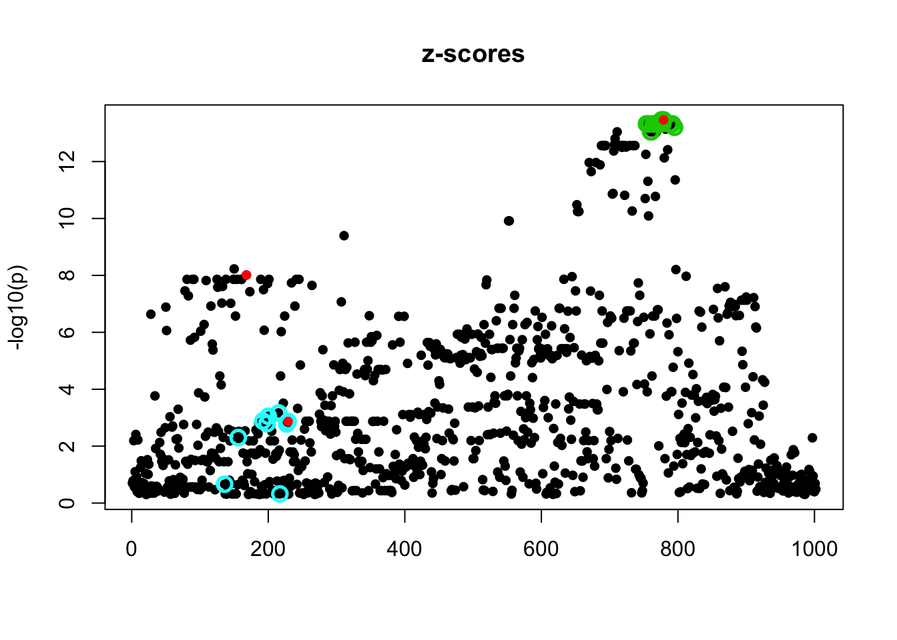
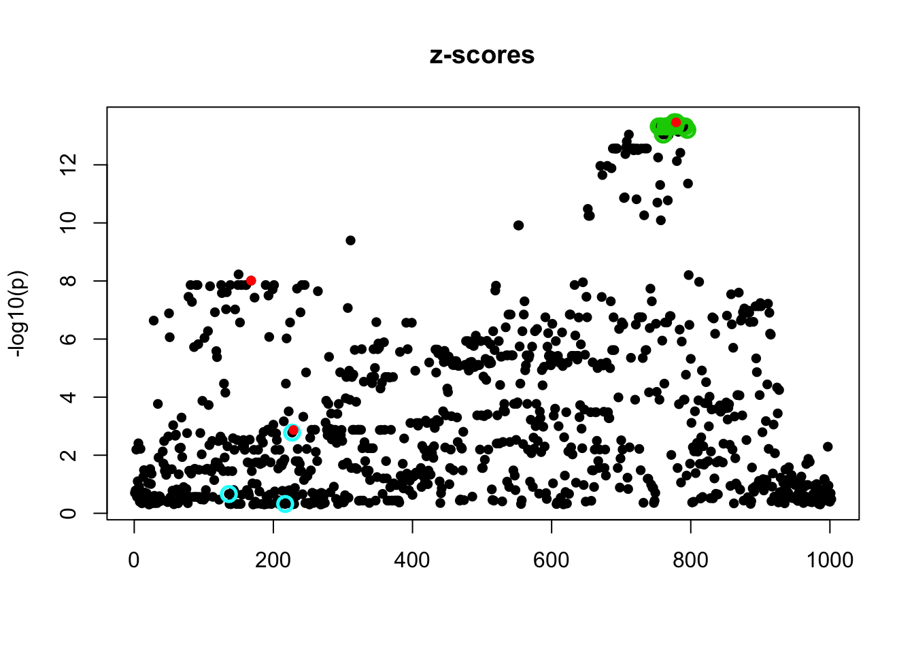
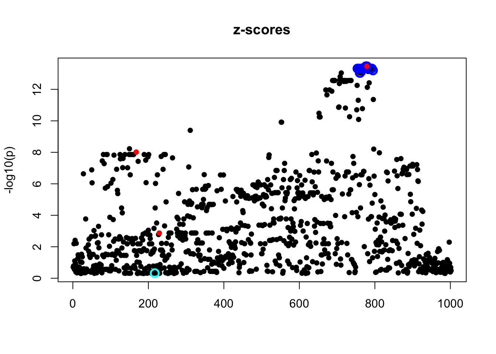
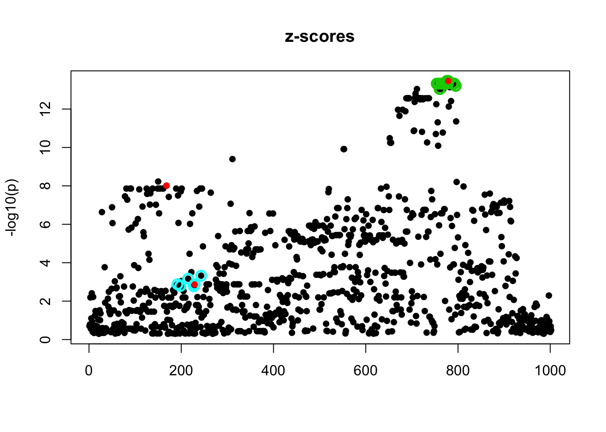

Last updated: 2018-10-11
workflowr checks: (Click a bullet for more information) ✔ R Markdown file: up-to-date
Great! Since the R Markdown file has been committed to the Git repository, you know the exact version of the code that produced these results.
✔ Environment: empty
Great job! The global environment was empty. Objects defined in the global environment can affect the analysis in your R Markdown file in unknown ways. For reproduciblity it’s best to always run the code in an empty environment.
✔ Seed:
set.seed(20180414)
The command set.seed(20180414) was run prior to running the code in the R Markdown file. Setting a seed ensures that any results that rely on randomness, e.g. subsampling or permutations, are reproducible.
✔ Session information: recorded
Great job! Recording the operating system, R version, and package versions is critical for reproducibility.
✔ Repository version: 027522f
wflow_publish or wflow_git_commit). workflowr only checks the R Markdown file, but you know if there are other scripts or data files that it depends on. Below is the status of the Git repository when the results were generated:
Ignored files:
Ignored: .DS_Store
Ignored: .Rhistory
Ignored: .Rproj.user/
Ignored: analysis/.Rhistory
Untracked files:
Untracked: analysis/null.Rmd
Untracked: analysis/test.Rmd
Untracked: data/geneMatrix.tsv
Untracked: data/liter_data_4_summarize_ld_1_lm_less_3.rds
Untracked: data/meta.tsv
Untracked: docs/figure/test.Rmd/
| File | Version | Author | Date | Message |
|---|---|---|---|---|
| Rmd | 027522f | stephens999 | 2018-10-11 | workflowr::wflow_publish(“analysis/false-positive.Rmd”) |
Here I want to investigate an example found by Gao which seemed counter-intuitive here
library("susieR")
dat = readRDS('data/liter_data_4_summarize_ld_1_lm_less_3.rds')$data
r=1
fitted = susieR::susie(dat$X, dat$Y[,r], L=5,
estimate_residual_variance=TRUE,
scaled_prior_variance=0.1, compute_univariate_zscore = TRUE,
tol=1e-3, track_fit=TRUE)
b = dat$true_coef[,r]
b[which(b!=0)] = 1
susieR::susie_plot(fitted, y='z', b=b, main = paste('z-scores'))
fitted_2 = susieR::susie(dat$X, dat$Y[,r], L=2,
estimate_residual_variance=TRUE,
scaled_prior_variance=0.1, compute_univariate_zscore = TRUE,
tol=1e-3, track_fit=TRUE,verbose=TRUE)[1] "objective:-775.804674315936"
[1] "objective:-773.393185662675"
[1] "objective:-773.191707918181"
[1] "objective:-773.190917254031"
[1] "objective:-773.186268435602"
[1] "objective:-773.186265526843"
[1] "objective:-773.185588621469"
[1] "objective:-773.18558857367"susieR::susie_plot(fitted_2, y='z', b=b, main = paste('z-scores'))
fitted_3 = susieR::susie(dat$X, dat$Y[,r], L=3,
estimate_residual_variance=TRUE,
scaled_prior_variance=0.1, compute_univariate_zscore = TRUE,
tol=1e-3, track_fit=TRUE,verbose=TRUE)[1] "objective:-777.041559108291"
[1] "objective:-774.509324548277"
[1] "objective:-773.961066224902"
[1] "objective:-773.953136355493"
[1] "objective:-773.514095844314"
[1] "objective:-773.508147593474"
[1] "objective:-772.777650203361"
[1] "objective:-772.768441606546"
[1] "objective:-771.952401007781"
[1] "objective:-771.948540235491"
[1] "objective:-771.397925517707"
[1] "objective:-771.397355149236"
[1] "objective:-771.029764399948"
[1] "objective:-771.029671935801"
[1] "objective:-770.761206664914"
[1] "objective:-770.761187984453"
[1] "objective:-770.565675638033"
[1] "objective:-770.56567193693"
[1] "objective:-770.432112374661"
[1] "objective:-770.432111791117"
[1] "objective:-770.348044157025"
[1] "objective:-770.348044145078"
[1] "objective:-770.298952562478"
[1] "objective:-770.298952433213"
[1] "objective:-770.271923744428"
[1] "objective:-770.271923235457"
[1] "objective:-770.257633348676"
[1] "objective:-770.257632445837"
[1] "objective:-770.250235274869"
[1] "objective:-770.250234119185"
[1] "objective:-770.246401538058"
[1] "objective:-770.246400308769"
[1] "objective:-770.244362769945"
[1] "objective:-770.244361608273"
[1] "objective:-770.243222662345"
[1] "objective:-770.243221648022"
[1] "objective:-770.242540676458"
[1] "objective:-770.242539836104"susieR::susie_plot(fitted_3, y='z', b=b, main = paste('z-scores'))
fitted_4 = susieR::susie(dat$X, dat$Y[,r], L=4,
estimate_residual_variance=TRUE,
scaled_prior_variance=0.1, compute_univariate_zscore = TRUE,
tol=1e-3, track_fit=TRUE,verbose=TRUE)[1] "objective:-778.561370250422"
[1] "objective:-775.98919346335"
[1] "objective:-775.436030616773"
[1] "objective:-775.42950895518"
[1] "objective:-775.214065252589"
[1] "objective:-775.212819504445"
[1] "objective:-774.925975595293"
[1] "objective:-774.923200475369"
[1] "objective:-774.437125036776"
[1] "objective:-774.431634496869"
[1] "objective:-773.828541734532"
[1] "objective:-773.825280539469"
[1] "objective:-773.312208414142"
[1] "objective:-773.311468958681"
[1] "objective:-772.906803025442"
[1] "objective:-772.906648815486"
[1] "objective:-772.571742103158"
[1] "objective:-772.571696375718"
[1] "objective:-772.294661687051"
[1] "objective:-772.294636190625"
[1] "objective:-772.081718638108"
[1] "objective:-772.081693534575"
[1] "objective:-771.937313560214"
[1] "objective:-771.937288153835"
[1] "objective:-771.852729769974"
[1] "objective:-771.852710342723"
[1] "objective:-771.809392480212"
[1] "objective:-771.809380953072"
[1] "objective:-771.78929061866"
[1] "objective:-771.789284561939"
[1] "objective:-771.780565565054"
[1] "objective:-771.780562486933"
[1] "objective:-771.776954730613"
[1] "objective:-771.776953200611"
[1] "objective:-771.775523752903"
[1] "objective:-771.775523029906"
[1] "objective:-771.774983535671"
[1] "objective:-771.774983220259"susieR::susie_plot(fitted_4, y='z', b=b, main = paste('z-scores'))
# check for numerical issues by re-initializing
fitted_5 = susieR::susie(dat$X, dat$Y[,r], s_init=fitted,
estimate_residual_variance=TRUE,
scaled_prior_variance=0.1, compute_univariate_zscore = TRUE,
tol=1e-3, track_fit=TRUE,verbose=TRUE)[1] "objective:-773.368068721488"
[1] "objective:-773.368068687787"
[1] "objective:-773.368042558515"
[1] "objective:-773.368042553921"susieR::susie_plot(fitted_5, y='z', b=b, main = paste('z-scores'))Try initializing to a random point:
set.seed(1)
s0 = susie_init_coef(sample(1:1002,5),rep(0.2,5),1002)
fitted_5_1 = susieR::susie(dat$X, dat$Y[,r], s_init=s0,
estimate_residual_variance=TRUE,
scaled_prior_variance=0.1, compute_univariate_zscore = TRUE,
tol=1e-3, track_fit=TRUE,verbose=TRUE)[1] "objective:-797.851000310095"
[1] "objective:-796.440186806343"
[1] "objective:-785.156774100912"
[1] "objective:-785.069807963874"
[1] "objective:-782.647606462992"
[1] "objective:-782.645671310411"
[1] "objective:-779.189930866962"
[1] "objective:-779.170405453995"
[1] "objective:-778.302215777705"
[1] "objective:-778.301990146647"
[1] "objective:-777.481830016999"
[1] "objective:-777.481656058337"
[1] "objective:-776.924556010392"
[1] "objective:-776.924043913616"
[1] "objective:-776.721619672707"
[1] "objective:-776.721309187996"
[1] "objective:-776.615079504789"
[1] "objective:-776.614769813923"
[1] "objective:-776.471469472555"
[1] "objective:-776.470626486646"
[1] "objective:-776.172185197459"
[1] "objective:-776.169706508781"
[1] "objective:-775.684336304658"
[1] "objective:-775.681607683144"
[1] "objective:-775.18600895616"
[1] "objective:-775.185194150039"
[1] "objective:-774.743260411932"
[1] "objective:-774.743091686268"
[1] "objective:-774.324523549895"
[1] "objective:-774.324428823311"
[1] "objective:-773.946644057355"
[1] "objective:-773.946463764978"
[1] "objective:-773.681725859222"
[1] "objective:-773.681481909657"
[1] "objective:-773.536976410513"
[1] "objective:-773.536809773768"
[1] "objective:-773.459998423707"
[1] "objective:-773.459911417006"
[1] "objective:-773.417924129102"
[1] "objective:-773.417882488994"
[1] "objective:-773.394736210078"
[1] "objective:-773.394716188256"
[1] "objective:-773.382035215326"
[1] "objective:-773.382025197428"
[1] "objective:-773.375174830528"
[1] "objective:-773.375169716772"
[1] "objective:-773.371552486598"
[1] "objective:-773.371549903381"
[1] "objective:-773.369699390254"
[1] "objective:-773.369698125389"
[1] "objective:-773.368786946662"
[1] "objective:-773.368786352628"susieR::susie_plot(fitted_5_1, y='z', b=b, main = paste('z-scores'))
set.seed(3)
s0 = susie_init_coef(sample(1:1002,5),rep(0.2,5),1002)
fitted_5_3 = susieR::susie(dat$X, dat$Y[,r], s_init=s0,
estimate_residual_variance=TRUE,
scaled_prior_variance=0.1, compute_univariate_zscore = TRUE,
tol=1e-3, track_fit=TRUE,verbose=TRUE)[1] "objective:-789.453907011998"
[1] "objective:-786.593053099166"
[1] "objective:-782.683643300187"
[1] "objective:-782.646020945144"
[1] "objective:-781.747082962017"
[1] "objective:-781.74452701266"
[1] "objective:-781.184196478078"
[1] "objective:-781.183464755331"
[1] "objective:-780.708332591413"
[1] "objective:-780.707905045029"
[1] "objective:-780.289621570411"
[1] "objective:-780.289450866451"
[1] "objective:-779.856826692045"
[1] "objective:-779.856813132957"
[1] "objective:-778.861245040369"
[1] "objective:-778.859533586987"
[1] "objective:-773.051326665178"
[1] "objective:-773.044120963791"
[1] "objective:-771.694091037964"
[1] "objective:-771.692872322107"
[1] "objective:-771.608712878383"
[1] "objective:-771.608712811233"
[1] "objective:-771.5365180326"
[1] "objective:-771.536516134038"
[1] "objective:-771.470480750661"
[1] "objective:-771.470479855569"
[1] "objective:-771.41435848381"
[1] "objective:-771.414358462286"
[1] "objective:-771.372441342393"
[1] "objective:-771.372438837627"
[1] "objective:-771.344536660738"
[1] "objective:-771.344529721232"
[1] "objective:-771.325705141757"
[1] "objective:-771.325696024286"
[1] "objective:-771.311635251229"
[1] "objective:-771.311626748589"
[1] "objective:-771.300539207241"
[1] "objective:-771.300532611694"
[1] "objective:-771.291882276292"
[1] "objective:-771.291877683788"
[1] "objective:-771.285366264078"
[1] "objective:-771.285363271401"
[1] "objective:-771.280652069231"
[1] "objective:-771.280650201455"
[1] "objective:-771.277368543423"
[1] "objective:-771.277367414449"
[1] "objective:-771.275161816582"
[1] "objective:-771.275161153239"
[1] "objective:-771.273727380486"
[1] "objective:-771.273727001745"
[1] "objective:-771.272823188133"
[1] "objective:-771.272822978592"susieR::susie_plot(fitted_5_3, y='z', b=b, main = paste('z-scores'))
Conclusion this is an edge case where susie converges to a local optimum.
sessionInfo()R version 3.5.1 (2018-07-02)
Platform: x86_64-apple-darwin15.6.0 (64-bit)
Running under: OS X El Capitan 10.11.6
Matrix products: default
BLAS: /Library/Frameworks/R.framework/Versions/3.5/Resources/lib/libRblas.0.dylib
LAPACK: /Library/Frameworks/R.framework/Versions/3.5/Resources/lib/libRlapack.dylib
locale:
[1] en_US.UTF-8/en_US.UTF-8/en_US.UTF-8/C/en_US.UTF-8/en_US.UTF-8
attached base packages:
[1] stats graphics grDevices utils datasets methods base
other attached packages:
[1] susieR_0.4.28
loaded via a namespace (and not attached):
[1] workflowr_1.1.1 Rcpp_0.12.19 matrixStats_0.54.0
[4] lattice_0.20-35 digest_0.6.18 rprojroot_1.3-2
[7] R.methodsS3_1.7.1 grid_3.5.1 backports_1.1.2
[10] magrittr_1.5 git2r_0.23.0 evaluate_0.12
[13] stringi_1.2.4 whisker_0.3-2 R.oo_1.22.0
[16] R.utils_2.7.0 Matrix_1.2-14 rmarkdown_1.10
[19] tools_3.5.1 stringr_1.3.1 yaml_2.2.0
[22] compiler_3.5.1 htmltools_0.3.6 knitr_1.20 This reproducible R Markdown analysis was created with workflowr 1.1.1